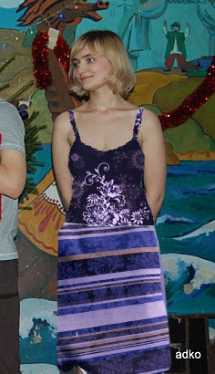
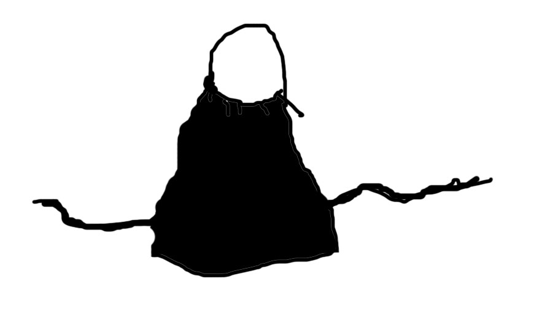

Маша Королёва
Штаны (или юбка):
Весеннее безумие
Это построже
А это домашнее и очень уютное
Рубашка:
Первая поглуше а вторая поярче и фон потемней
А это в качестве рубашки уже котируется за весеннее безумие или для вечеринок у друзей
Странно что юбки не любит - вот например:

Пока я подбирал ткань для рубашки, чем-то всё таки меня смущала она - может ткани не те или фасон не тот, и тут я вспомнил один ужасно отличный фасон - совсем такая даже не знаю как сказать, для жаркого жаркого лета, может египта. Японское изобретение, в мультики "Унесённые призраками" на девочке и женщинах такие штуки:

То есть это как передничек на всё тело спереди, одевается или завязывается (как сделать) на голову и завязывается чуть ниже талии сзади на бантик-узелок. Спина вся голая, всё продувает, для зверски влажной и от этого убойно жаркой японии самое то. Её можно и пододевать.
Но самое главное - что мне кажется это именно то что нужно :)
Итак, вариант первый, геройский (конечно же мной злорадно рекомендуемый :)):
ЮБКА! Из любой ткани которая для штанов. Если полосатую, то полоски горизонтально будут. А тот японский фартучек - из вот этого:
Вариант второй, это тот же фартучек, но с безопасными штанами из любой ткани что я выбрал.
Третий вариант супербезопасный, тоже хороший, просто не такой уверенно тыдыщный - это штаны и рубашка всё же с длинным рукавом (как я говорил первый раз). Просто тогда рубашку и штаны лучше будет носить раздельно, они сами по себе круты, а вместе буду спорить друг с другом. Если мои штаны, то кофточку-блузку какую-нибудь нужно однотонную, тёмную например. Если рубашка моя, то штаны значит должны быть нецветастыми - джинсы например, или любые другие однотонные штаны, но не светлые.
Четвёртый вариант психический - штаны и юбка. Я видимо таки хочу её обрядить в юбку :))
И пятый, если денег хватит - штаны и юбка и тот фартучек. Ну тут и далее на самом деле тут может быть много комбинаций - чисто математически хотя бы :)
Фартучек - 1000
Рубашка с длинным рукавом - 1200
Брюки 1500
Юбку, если согласишься, сделаю за 1000 :))))
{kind=link}
{kind=link}
{kind=link}
{kind=link}
{kind=link}
{kind=link}
{kind=link}